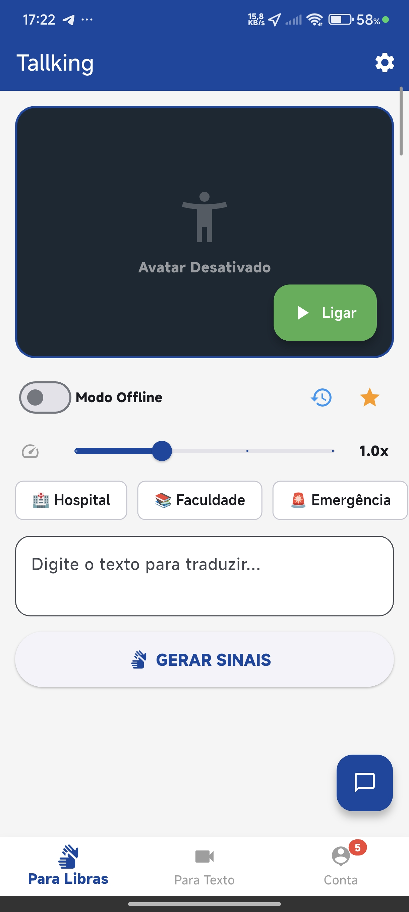
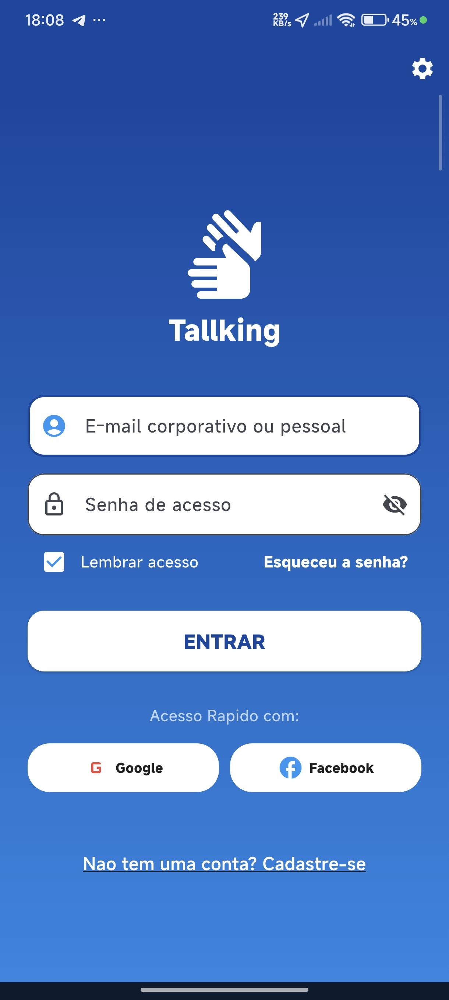
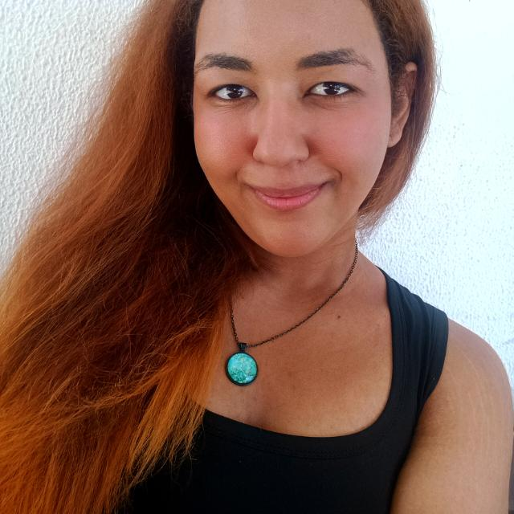
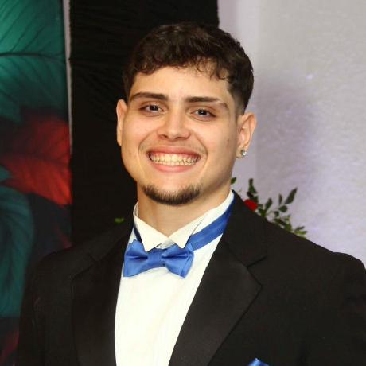

Projeto Tallking
Acessibilidade global, Tradução Bidirecional com IA e Prototipação
O Círculo Dourado
Por quê?
(O Propósito)
Acreditamos que a comunicação deve ser universal. Nosso objetivo é quebrar barreiras para todas as pessoas em qualquer lugar do mundo.
Como?
(O Processo)
Através de uma IA avançada que traduz bidirecionalmente Texto/Áudio para Linguagens de Sinais usando um Avatar 3D, e vice-versa.
O Quê?
(O Produto)
Um ecossistema (Web, Mobile e Desktop) que traduz automaticamente múltiplas linguagens de sinais do mundo todo.
Nossa Persona
Carlos Eduardo, 28 anos
Designer Gráfico • São Paulo, SP (Pessoa Surda)
"O aplicativo e otimo e muito util para a sociedade como um todo. O que pode melhorar ainda mais e a integracao de girias e expressoes regionais. O aplicativo ja esta otimo, mas ao entender as particularidades de cada regiao, o TalkingFree vai entregar uma comunicacao 100% humana."
Dores & Frustrações
- Perda de identidade cultural: sente que sua expressividade e limitada, pois ferramentas genericas nao compreendem girias, expressoes locais e variacoes regionais da lingua de sinais.
- Barreiras no ambiente de trabalho: enfrenta gargalos na comunicacao rapida em reunioes com clientes ouvintes e no recebimento de feedbacks urgentes.
- Inseguranca em emergencias: sente ansiedade em situacoes atipicas, como consultas medicas urgentes ou imprevistos na rua, sem tempo para acionar interprete humano.
- Atrasos na comunicacao: frustra-se com aplicativos de alta latencia, que quebram o ritmo natural da conversa.
Objetivos & Necessidades
- Comunicacao natural e regionalizada: precisa que avatar e reconhecimento entendam e reproduzam girias e expressoes regionais de Sao Paulo e de outras regioes.
- Traducao simultanea real (baixa latencia): deseja respostas rapidas o suficiente para conversas dinamicas, sem atrasos perceptiveis.
- Integracao profissional: busca uma ferramenta que fique aberta no computador ou celular durante o trabalho para facilitar networking e prospeccao.
- Expressividade facial e corporal no avatar: precisa que o avatar 3D traduza emocao com expressoes faciais, essenciais na lingua de sinais.
Diagrama: Tradução Bidirecional
O fluxo automatizado de como o sistema quebra a barreira da comunicação instantaneamente, sem humanos.
Entrada de Dados
Ouvinte digita ou fala.
OU
Surdo grava um vídeo fazendo sinais.
Processamento
IA processa o texto/voz ou reconhece e decodifica os movimentos via Visão Computacional.
Tradução (IA)
O motor converte para a linguagem de sinais desejada ou para formato texto/áudio.
Renderização
O Avatar 3D realiza os sinais na tela.
OU
O app emite o texto/áudio lido.
Compreensão
Diálogo fluido alcançado, 100% automatizado, com zero dependência de intérpretes humanos.
Mapeamento de Requisitos
Funcionais
- O usuário digita/fala, e o Avatar 3D responde em linguagem de sinais.
- Captura de vídeo do usuário sinalizando para tradução do app para Texto e Áudio.
- Suporte a todas as linguagens de sinais do mundo (Libras, ASL, BSL, etc.).
- Interface unificada e sincronizada entre Web, Mobile e Desktop.
Não Funcionais
- Processamento de Inteligência Artificial com baixa latência (tempo real).
- Renderização do Avatar 3D otimizada para não travar em dispositivos básicos.
- Acesso à câmera e microfone com rigorosas normas de privacidade (LGPD).
- Design universal e acessível (Alto contraste, fontes legíveis).
Modelo de Negócio (Canvas)
Parcerias Chaves
- Associações de Surdos globais.
- Provedores de APIs de IA.
- Empresas (B2B).
Atividades
- Treinar modelo de IA.
- Animar Avatar 3D.
Recursos
- Bancos de dados de sinais.
- Servidores/Nuvem de IA.
Proposta de Valor
- B2C: Independência para conversar em sua linguagem natural via tradução 100% IA (sem humanos).
- B2B: Acessibilidade automatizada e barata para as empresas.
Relacionamento
- Autoatendimento.
- Cocriação com surdos.
Canais
- App Stores e Web.
- Venda B2B corporativa.
Segmentos
- B2C: Surdos, ouvintes e estudantes de sinais.
- B2B: Setor público, varejo e corporações com foco em ESG.
Estrutura de Custos
- Hospedagem e processamento pesados de IA de vídeo/Avatar na nuvem.
- Engenharia de Software (Web, Mobile, Desktop).
Fontes de Renda
- B2B: API/SaaS para integrar o Avatar em sites de terceiros.
- B2C: App Freemium ou Assinatura Premium (uso offline ilimitado).
Telas do Projeto (Web & Mobile)
Interfaces Web / Desktop
Aguardando Imagem Local

Aguardando Imagem Local

Plataforma completa para uso em PCs e sistemas corporativos.
Telas Mobile


Tradução bidirecional (Câmera e Avatar) na palma da mão.
Feedback e Validações
Testamos as interfaces com nossos potenciais usuários e estes foram os principais aprendizados da experiência com o Avatar IA:
O que funcionou bem
- A liberdade de usar o celular a qualquer hora sem depender de um humano agradou muito.
- A seleção de múltiplas linguagens de sinais de vários países foi apontada como um marco histórico de inclusão.
Pontos de Melhoria
- A câmera precisa estar em locais iluminados para a IA processar os movimentos das mãos sem delay.
- O Avatar 3D precisa ter expressões faciais mais ricas, essenciais nas linguagens de sinais.
A Equipe
Desenvolvedores do ecossistema Tallking

Andre
RA: 1352526303
Leandro
RA: 13525122150

Kaleu
RA: 1352527674